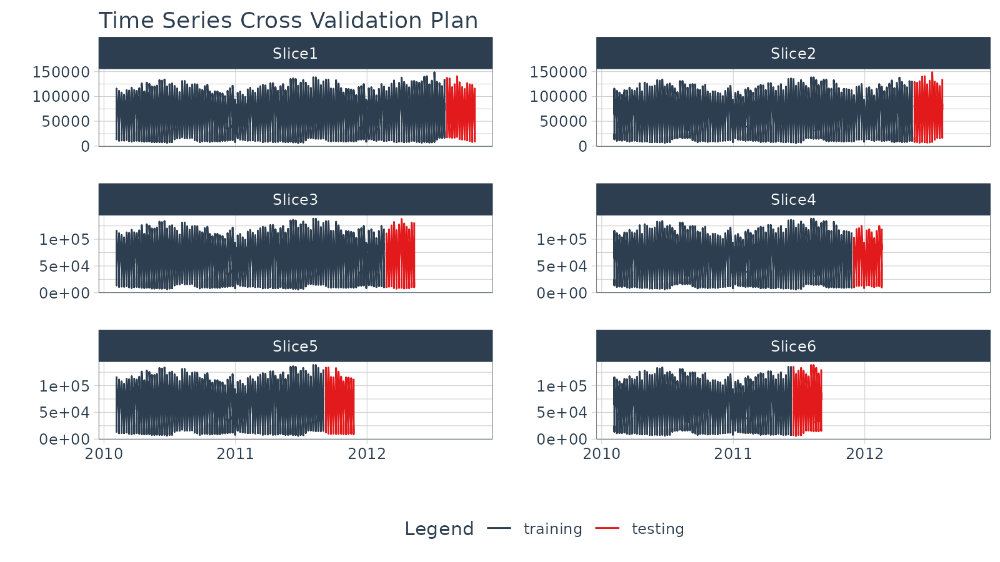

Working with Panel Data is a common challenge for business analysts. We often have multiple time series (called Time Series Groups) that have overlapping timestamps (panels). These time series may depend on each other and should be modeled together using cross-sectional modeling strategies to take advantage of relationships between correlated time series. The issue becomes, how to evaluate the cross-sectional model over time so we can select the most robust model.
The challenge when working with Panel Data is judging how cross-sectional models will perform over time. A single cross-section is not sufficient to instill confidence. Rather, we need to resample to assess stability of our models prior to model selection.
Modeltime Resample provides a convienent way for generating resample predictions across time for Panel Data, simplifying the model comparison process.
Panel Data Tutorial Overview
This is an advanced tutorial. Working with Panel Data requires working with multiple time series groups at the same time, and you need to be comfortable setting up the datasets required to generate training sets and forecast sets. I cover working with Panel Data and Time Series Groups in my High-Performance Time Series Course.
Data
We’ll use the walmart_sales_weekly dataset from timetk. This contains 7 time series groups, which correspond to the revenue over time for seven departments in one Walmart Store.
walmart_sales_weekly %>%
group_by(id) %>%
plot_time_series(Date, Weekly_Sales, .facet_ncol = 3, .interactive = FALSE)Data Preparation
We’ll create 2 datasets that incorporate a grouping variable:
Training Data Set,
data_prepared_tbl: Dataset that contains information on the training region for each time series groupForecast Data Set,
future_tbl: Dataset that contains information on the forecast region for each time series group. We’ll extend each time series group by"3 months"based on the business forecast needs.
# Full = Training + Forecast Datasets
full_data_tbl <- walmart_sales_weekly %>%
select(id, Date, Weekly_Sales) %>%
# Apply Group-wise Time Series Manipulations
group_by(id) %>%
future_frame(
.date_var = Date,
.length_out = "3 months",
.bind_data = TRUE
) %>%
ungroup() %>%
# Consolidate IDs
mutate(id = fct_drop(id))
# Training Data
data_prepared_tbl <- full_data_tbl %>%
filter(!is.na(Weekly_Sales))
# Forecast Data
future_tbl <- full_data_tbl %>%
filter(is.na(Weekly_Sales))Resampling Panel Data
The first step is to make a resample strategy. Our business objective is to forecast 3 months so we’ll use time_series_cv() with the following strategy:
- assess: 3 months. Corresponds to our business objective.
- skip: 3 months. Use 3 months to avoid overlapping assessment sets.
- cumulative: TRUE. Maximizes the Training Set (alternatively we could do initial = “18 months” to have sliding training sets)
- slice_limit: 6. Keep the 6 largest train/test resamples to prevent too few observations. If we go below one full year, we will not be able to take advantage of the week of the year feature.
This generates 6 resample sets.
walmart_tscv <- data_prepared_tbl %>%
time_series_cv(
date_var = Date,
assess = "3 months",
skip = "3 months",
cumulative = TRUE,
slice_limit = 6
)
walmart_tscv## # Time Series Cross Validation Plan
## # A tibble: 6 × 2
## splits id
## <list> <chr>
## 1 <split [917/84]> Slice1
## 2 <split [833/84]> Slice2
## 3 <split [749/84]> Slice3
## 4 <split [665/84]> Slice4
## 5 <split [581/84]> Slice5
## 6 <split [497/84]> Slice6We can visualize the resample sets with plot_time_series_cv_plan(). They look a little crazy because there are multiple time series groups. The important thing is to make sure the red and blue parts line up as expected in relation to our sampling strategy.
walmart_tscv %>%
tk_time_series_cv_plan() %>%
plot_time_series_cv_plan(Date, Weekly_Sales,
.facet_ncol = 2, .interactive = F)
Modeling
We’ll create:
1 Recipe: This applies engineered features from calendar variables
3 Fitted Models: Prophet, XGBoost, and Prophet Boost fitted on the
data_prepared_tbldataset
Recipe
We’ll create a recipe that leverages step_timeseries_signature() to generate calendar features.
recipe_spec <- recipe(Weekly_Sales ~ .,
data = training(walmart_tscv$splits[[1]])) %>%
step_timeseries_signature(Date) %>%
step_rm(matches("(.iso$)|(.xts$)|(day)|(hour)|(minute)|(second)|(am.pm)")) %>%
step_mutate(Date_week = factor(Date_week, ordered = TRUE)) %>%
step_dummy(all_nominal(), one_hot = TRUE)Models
Let’s generate 3 Models: Prophet, XGBoost, and Prophet Boost.
Prophet
wflw_fit_prophet <- workflow() %>%
add_model(
prophet_reg() %>% set_engine("prophet")
) %>%
add_recipe(recipe_spec) %>%
fit(training(walmart_tscv$splits[[1]]))Prophet Boost
wflw_fit_prophet_boost <- workflow() %>%
add_model(
prophet_boost(
seasonality_daily = FALSE,
seasonality_weekly = FALSE,
seasonality_yearly = FALSE
) %>%
set_engine("prophet_xgboost")
) %>%
add_recipe(recipe_spec) %>%
fit(training(walmart_tscv$splits[[1]]))Organize in a Modeltime Table
Add the 3 fitted models to a Modeltime Table with modeltime_table().
model_tbl <- modeltime_table(
wflw_fit_prophet,
wflw_fit_xgboost,
wflw_fit_prophet_boost
)
model_tbl## # Modeltime Table
## # A tibble: 3 × 3
## .model_id .model .model_desc
## <int> <list> <chr>
## 1 1 <workflow> PROPHET W/ REGRESSORS
## 2 2 <workflow> XGBOOST
## 3 3 <workflow> PROPHET W/ XGBOOST ERRORSAssess a Single Resample Split
We can make a Panel Data forecast, which forecasts all of the time series groups at once. This method is much more efficient than iteratively performing predictions. However, not all time series models respond well to this approach.
# Calibrate using the Test Sample
calibration_tbl <- model_tbl %>%
modeltime_calibrate(testing(walmart_tscv$splits[[1]]))
# Forecast the Test Sample
forecast_panel_tbl <- calibration_tbl %>%
modeltime_forecast(
new_data = testing(walmart_tscv$splits[[1]]),
actual_data = data_prepared_tbl,
# Keep data allows us keep the ID feature for the time series groups
keep_data = TRUE
) We can visualize the Panel Data forecasts on a single split. It’s a bit difficult to tell how each model is performing.
forecast_panel_tbl %>%
group_by(id) %>%
plot_modeltime_forecast(
.facet_ncol = 3,
.y_intercept = 0,
.interactive = FALSE,
.title = "Panel Forecasting | 7 Time Series Groups"
)
Panel Forecasting | 7 Time Series Groups
Quantifying Prediction Error Over Time
We’ve made predictions, but this doesn’t tell us how the models will do over time. We need to quantify prediction error. To do so, we’ll evaluate our models using time series resamples. This technique involves making resamples across time series windows and refitting our models to the resample data sets, producing predictions, and quantifying the error from the predictions.
Apply Models to Resamples
With model_tbl (models) and walmart_tscv (resamples) in had, we are ready to iteratively fit and predict each of the models on each of the resampling plan sets, producing resample predictions.
resample_results <- model_tbl %>%
modeltime_fit_resamples(
resamples = walmart_tscv,
control = control_resamples(verbose = FALSE)
)A new column (“.resample_results”) containing the resample predictions has been added to the original model_tbl.
resample_results## # Modeltime Table
## # A tibble: 3 × 4
## .model_id .model .model_desc .resample_results
## <int> <list> <chr> <list>
## 1 1 <workflow> PROPHET W/ REGRESSORS <rsmp[+]>
## 2 2 <workflow> XGBOOST <rsmp[+]>
## 3 3 <workflow> PROPHET W/ XGBOOST ERRORS <rsmp[+]>Evaluate Resample Accuracy
With resampled predictions, we can now assess the robustness of our models over time. This will increase our confidence in the stability of our models, enabling us select the best model(s) for the time-varying data.
Resample Accuracy Plot
We can visually evaluate the accuracy with plot_modeltime_resamples(). We can see that Prophet Boost and XGBoost Models have the much lower average RMSE compared to the other Prophet w/ Regressors Model.
resample_results %>%
plot_modeltime_resamples(
.summary_fn = mean,
.point_size = 3,
.interactive = FALSE
)
Resample Accuracy Table
We can get an interactive or static table using modeltime_resample_accuracy(). I’m interested not only in the average metric value but also in the variability (standard deviation). I can get both of these by adding multiple summary functions using a list().
resample_results %>%
modeltime_resample_accuracy(summary_fns = list(mean = mean, sd = sd)) %>%
table_modeltime_accuracy(.interactive = FALSE)| Accuracy Table | |||||||||||||||
| .model_id | .model_desc | .type | n | mae_mean | mae_sd | mape_mean | mape_sd | mase_mean | mase_sd | smape_mean | smape_sd | rmse_mean | rmse_sd | rsq_mean | rsq_sd |
|---|---|---|---|---|---|---|---|---|---|---|---|---|---|---|---|
| 1 | PROPHET W/ REGRESSORS | Resamples | 6 | 6328.68 | 1168.42 | 17.26 | 4.09 | 0.19 | 0.04 | 16.49 | 3.68 | 8792.52 | 1322.96 | 0.95 | 0.02 |
| 2 | XGBOOST | Resamples | 6 | 4854.34 | 519.97 | 12.58 | 3.50 | 0.14 | 0.02 | 11.87 | 2.44 | 6969.84 | 970.69 | 0.97 | 0.02 |
| 3 | PROPHET W/ XGBOOST ERRORS | Resamples | 6 | 4677.63 | 747.38 | 13.73 | 4.96 | 0.14 | 0.02 | 12.12 | 3.14 | 6724.22 | 1221.71 | 0.97 | 0.02 |
Wrapup
Working with Panel Data can be challenging due to managing multiple models, overlapping time series groups, and multiple resample sets.
Modeltime Resample makes working with Panel Data much easier. We saw how we can evaluate multiple models on varying time series windows. This increased our confidence that selecting either the XGBoost or Prophet Boost models were best for this data.
This is a quick overview of working with Panel Data. To learn how to evaluate Panel Data in-depth, take my High-Performance Time Series Course.